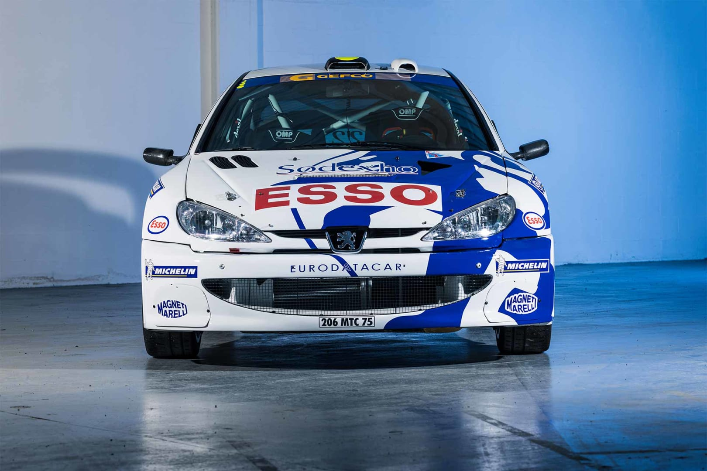
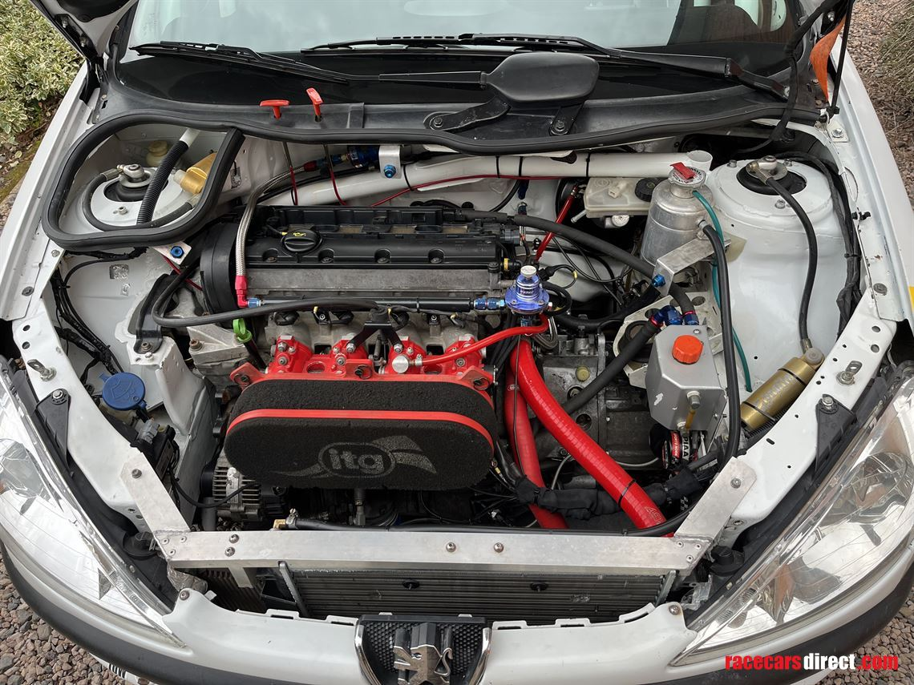

Történelem
A Peugeot 206 WRC egy rali autó, amelyet a Peugeot Sport fejlesztett ki a FIA World Rally Championship számára. A járművet 1999-ben mutatták be, és gyorsan az egyik legsikeresebb modellé vált a rali világában.
Az 1997-es rali-világbajnokság egy sor jelentős változást hozott magával. Az A csoportos autókat a World Rally Cars (WRC) váltotta fel, ami tehermentesítette a gyártókat, mivel már nem kellett sorozatban gyártaniuk az autók szériaváltozatait, amelyekkel versenyeztek. Az átalakítás megkönnyítette az új gyártók számára, hogy csatlakozzanak a sorozathoz, és a következő néhány évben megnőtt az érdeklődés, és olyan csapatok neveztek be világbajnokságra, mint a Seat, a Citroën, a Peugeot és a Hyundai.
Az új technikai szabályok mellett az új korszakban a versenyek rendszere is megújult. A raliversenyek rövidebbek lettek a hosszú maratoni jellegű versenyekhez képest, amelyekkel korábban a csapatoknak szembe kellett nézniük, de a versenynaptár 14 raliversenyre bővült. Míg a gyártók többsége keményen dolgozott az új rallyautók építésén és fejlesztésén, a Mitsubishi úgy döntött, hogy más megközelítést választ. A Lancer Evolution már sikeres csomag volt, és nagyon hasonlított az utcai modellre, ami jót tett az eladásoknak. Emiatt a japán cég továbbra is A csoportos specifikációban nevezte be autóit.
Műszaki adatok
A Peugeot 206 WRC egy 2.0 literes turbófeltöltős motorral van felszerelve, amely körülbelül 300 lóerőt és 580 Nm nyomatékot biztosít. Az autó összkerékhajtású, és speciálisan tervezett felfüggesztéssel és fékrendszerrel rendelkezik, hogy megfeleljen a különböző rali szakaszok kihívásainak.
| Benzin motorok | ||||||
|---|---|---|---|---|---|---|
| Model | Type | Erő(hp,Nm) | 0–100 km/h (0–62 mph) (s) | Top speed | Transmission | CO 2 kibocsátás (g/km) |
| D4D | 999cc (61.0cuin) | 76hp (57kW; 77PS) 5750, 93N⋅m (69lb⋅ft) 4500 | 18.6 | 144km/h (89mph) | MA5 / AL4 | 155 |
| TU1JP | 1,124cc (68.6cuin) | 59hp (44kW; 60PS) 5500, 94N⋅m (69lb⋅ft) 2700 | 15.4 | 158km/h (98mph) | 148 | |
| TU3JP | 1,360cc (83cuin) | 75hp (56kW; 76PS) 5250, 133N⋅m (98lb⋅ft) 3250 | 11.9 | 187km/h (116mph) | 152 | |
| TU3A | 10.8 | 189km/h (117mph) | 139 | |||
| ET3J4 | 89hp (66kW; 90PS) 5500, 120N⋅m (89lb⋅ft) 2800 | 10.1 | 193km/h (120mph) | 145 | ||
| TU5JP | 1,587cc (96.8cuin) | 89hp (66kW; 90PS) 5600, 135N⋅m (100lb⋅ft) 3000 | 10 | 180km/h (110;mph) | MA5 / BE4 / AL4 | 171 |
| TU5JP4 | 109hp (81kW; 111PS) 5800, 147N⋅m (108lb⋅ft) 4000 | 10.2 | 185km/h (115mph) | |||
| EW10J4 | 1,997cc (121.9cuin) | 138hp (103kW; 140PS) 6000, 190N⋅m (140lb⋅ft) 4100 | 8.3 | 210km/h (130mph) | BE4 / AL4 | 185 |
| EW10J4S | 177hp (132kW; 179PS) 7000, 202N⋅m (149lb⋅ft) 4750 | 7.4 | 217km/h (135mph) | BE4 | 204 | |
| Diesel motorok | ||||||
| DW8 | 1,868cc (114.0cuin) | 69hp (51kW; 70PS) 4600, 125N⋅m (92lb⋅ft) 2500 | 15.2 | 161km/h (100mph) | BE4 | 156 |
| DV4TD | 1,398cc (85.3cuin) | 67hp (50kW; 68PS) 4000, 160N⋅m (118lb⋅ft) 2000 | 13.1 | 168km/h (104mph) | 112 | |
| DW10TD | 1,997cc (121.9cuin) | 89hp (66kW; 90PS) 4000, 205N⋅m (151lb⋅ft) 1900 | 11.7 | 180km/h (110mph) | 136 | |
| DV6TED4 | 1,560cc (95cuin) | 108hp (81kW; 109PS) 4000, 240N⋅m (177lb⋅ft) 1750 | 9.9 | 186km/h (116mph) | 126 | |
Eredmények
A Peugeot 206 WRC számos jelentős győzelmet aratott a WRC-ben, beleértve a gyártói és pilóta bajnoki címeket is. Az autó híres volt megbízhatóságáról és teljesítményéről, és sok rali rajongó emlékezetében élénken él.
A legöregebb WRC:
Szerencsések voltak a magyar nézők, hiszen szinte elsőként láthatták a Peugeot 206 WRC-t nemzeti bajnokságban, köszönhetően annak, hogy Rolf Schmidt már 2000-ben kapott egy ilyen autót. Ez a versenyautó akkor mind az osztrák, mind a magyar futamokon indult. Igazán nálunk volt sikeres az autó, mert míg Janika sorra gyűjtötte az első helyeket, addig Achim Mörtl háromszor is totálkárosra törte az első évben.